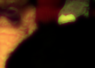
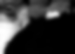

This family records where scene-spectrum assumptions and anterior-eye optical effects altered the retinally delivered light before receptor sampling.
Retinal irradiance band composite

Optical stage summary
{
"pupil_shape": "circular",
"pupil_area_mm2": 7.0685834705770345,
"reference_pupil_area_mm2": 7.0685834705770345,
"pupil_throughput_scale": 1.0,
"effective_f_number": 7.433333333333334,
"effective_f_number_x": 7.433333333333334,
"effective_f_number_y": 7.433333333333334,
"anisotropy_active": false,
"defocus_diopters": 0.0,
"defocus_residual_diopters": 0.0,
"lca_reference_wavelength_nm": 555.0,
"lca_anchor_wavelengths_nm": [
400.0,
555.0,
700.0
],
"lca_offset_diopters": [
1.0,
1.0,
1.0,
1.0,
1.0,
0.9557945041816008,
0.9126671911880408,
0.8705790905557718,
0.829493087557604,
0.7893738140417453,
0.7501875468867216,
0.7119021134593992,
0.6744868035190614,
0.6379122870605294,
0.6021505376344085,
0.5671747607231478,
0.5329593267882188,
0.4994797086368366,
0.46671242278654773,
0.43463497453310684,
0.4032258064516128,
0.3724642500831394,
0.34233048057932874,
0.3128054740957966,
0.2838709677419355,
0.2555094219099329,
0.22770398481973428,
0.2004384591293453,
0.17369727047146413,
0.14746543778801838,
0.12172854534388312,
0.09647271630991867,
0.07168458781362014,
0.04735128736312529,
0.02346041055718471,
0.0,
-0.04310344827586232,
-0.08544400366188598,
-0.12704174228675136,
-0.16791604197901033,
-0.2080856123662308,
-0.24756852343059244,
-0.2863822326125075,
-0.3245436105476671,
-0.3620689655172411,
-0.3989740666856656,
-0.4352741661955908,
-0.4709840201850295,
-0.5061179087875418,
-0.5406896551724136,
-0.5747126436781609,
-0.6081998370893295,
-0.6411637931034481,
-0.6736166800320771,
-0.7055702917771883,
-0.737036062121611,
-0.768025078369906,
-0.7985480943738654,
-0.8286155429747812,
-0.8582375478927204,
-0.8874239350912779,
-0.9161842436446013,
-0.944527736131934,
-0.9724634085834779,
-1.0,
-1.0,
-1.0,
-1.0,
-1.0
],
"total_defocus_diopters_by_wavelength": [
1.0,
1.0,
1.0,
1.0,
1.0,
0.9557945041816008,
0.9126671911880408,
0.8705790905557718,
0.829493087557604,
0.7893738140417453,
0.7501875468867216,
0.7119021134593992,
0.6744868035190614,
0.6379122870605294,
0.6021505376344085,
0.5671747607231478,
0.5329593267882188,
0.4994797086368366,
0.46671242278654773,
0.43463497453310684,
0.4032258064516128,
0.3724642500831394,
0.34233048057932874,
0.3128054740957966,
0.2838709677419355,
0.2555094219099329,
0.22770398481973428,
0.2004384591293453,
0.17369727047146413,
0.14746543778801838,
0.12172854534388312,
0.09647271630991867,
0.07168458781362014,
0.04735128736312529,
0.02346041055718471,
0.0,
-0.04310344827586232,
-0.08544400366188598,
-0.12704174228675136,
-0.16791604197901033,
-0.2080856123662308,
-0.24756852343059244,
-0.2863822326125075,
-0.3245436105476671,
-0.3620689655172411,
-0.3989740666856656,
-0.4352741661955908,
-0.4709840201850295,
-0.5061179087875418,
-0.5406896551724136,
-0.5747126436781609,
-0.6081998370893295,
-0.6411637931034481,
-0.6736166800320771,
-0.7055702917771883,
-0.737036062121611,
-0.768025078369906,
-0.7985480943738654,
-0.8286155429747812,
-0.8582375478927204,
-0.8874239350912779,
-0.9161842436446013,
-0.944527736131934,
-0.9724634085834779,
-1.0,
-1.0,
-1.0,
-1.0,
-1.0
],
"media_transmission_applied": true,
"media_transmission_source": "C:\\Users\\steve\\retinal_sim\\retinal_sim\\data\\optical_media\\human_reference.csv",
"media_transmission_values": [
0.18000000715255737,
0.20499999821186066,
0.23000000417232513,
0.2549999952316284,
0.2800000011920929,
0.3149999976158142,
0.3499999940395355,
0.38499999046325684,
0.41999998688697815,
0.45500001311302185,
0.49000000953674316,
0.5249999761581421,
0.5600000023841858,
0.5924999713897705,
0.625,
0.6575000286102295,
0.6899999976158142,
0.7149999737739563,
0.7400000095367432,
0.7649999856948853,
0.7900000214576721,
0.8075000047683716,
0.824999988079071,
0.8424999713897705,
0.8600000143051147,
0.8725000023841858,
0.8849999904632568,
0.8974999785423279,
0.9100000262260437,
0.9175000190734863,
0.925000011920929,
0.9325000047683716,
0.9399999976158142,
0.9449999928474426,
0.949999988079071,
0.9549999833106995,
0.9599999785423279,
0.9624999761581421,
0.9649999737739563,
0.9674999713897705,
0.9700000286102295,
0.9725000262260437,
0.9750000238418579,
0.9775000214576721,
0.9800000190734863,
0.981249988079071,
0.9825000166893005,
0.9837499856948853,
0.9850000143051147,
0.9862499833106995,
0.987500011920929,
0.9887499809265137,
0.9900000095367432,
0.9904999732971191,
0.9909999966621399,
0.9915000200271606,
0.9919999837875366,
0.9925000071525574,
0.9929999709129333,
0.9934999942779541,
0.9940000176429749,
0.9942499995231628,
0.9944999814033508,
0.9947500228881836,
0.9950000047683716,
0.9950000047683716,
0.9950000047683716,
0.9950000047683716,
0.9950000047683716
],
"psf_sigma_mm_x": [
0.02368245553251605,
0.02368324263864431,
0.023684040007068047,
0.0236848476367508,
0.0236856655266429,
0.022642472943971818,
0.02162497973823146,
0.020632285591736348,
0.01966353722431658,
0.018717926407492508,
0.01779468829917964,
0.016893100124399894,
0.0160124802422815,
0.015152187659618075,
0.014311622078863393,
0.013490224607352254,
0.01268747931045241,
0.01190291587320532,
0.011136113757086811,
0.010386708424101169,
0.009654400488272692,
0.008938969110677411,
0.00824029169338631,
0.007558373155331987,
0.006893390165361618,
0.006245759372271171,
0.005616245272934078,
0.005006135581922225,
0.00441753513057076,
0.003853873732513527,
0.003320806848861624,
0.0028278271270580505,
0.0023910316594481728,
0.0020370171122800246,
0.001804535748213423,
0.00173271,
0.002023865449486683,
0.0026825029999183155,
0.003492289278162884,
0.004358524691336965,
0.005244318780483446,
0.0061338806410337725,
0.007019698232514893,
0.007897900508740268,
0.008766387196875398,
0.009623992119715962,
0.010470074653511434,
0.011304305316265173,
0.012126546335274532,
0.012936781743355759,
0.013735074730605559,
0.014521540697858661,
0.015296329718710231,
0.016059614834539625,
0.016811584074804813,
0.017552434919276824,
0.018282370398141883,
0.019001596313178853,
0.01971031924019939,
0.020408745084683745,
0.021097078034686537,
0.021775519802607852,
0.022444269079309243,
0.02310352114580824,
0.023753467602857483,
0.023754908861540597,
0.02375636028991815,
0.02375782188612626,
0.02375929364828845
],
"psf_sigma_mm_y": [
0.02368245553251605,
0.02368324263864431,
0.023684040007068047,
0.0236848476367508,
0.0236856655266429,
0.022642472943971818,
0.02162497973823146,
0.020632285591736348,
0.01966353722431658,
0.018717926407492508,
0.01779468829917964,
0.016893100124399894,
0.0160124802422815,
0.015152187659618075,
0.014311622078863393,
0.013490224607352254,
0.01268747931045241,
0.01190291587320532,
0.011136113757086811,
0.010386708424101169,
0.009654400488272692,
0.008938969110677411,
0.00824029169338631,
0.007558373155331987,
0.006893390165361618,
0.006245759372271171,
0.005616245272934078,
0.005006135581922225,
0.00441753513057076,
0.003853873732513527,
0.003320806848861624,
0.0028278271270580505,
0.0023910316594481728,
0.0020370171122800246,
0.001804535748213423,
0.00173271,
0.002023865449486683,
0.0026825029999183155,
0.003492289278162884,
0.004358524691336965,
0.005244318780483446,
0.0061338806410337725,
0.007019698232514893,
0.007897900508740268,
0.008766387196875398,
0.009623992119715962,
0.010470074653511434,
0.011304305316265173,
0.012126546335274532,
0.012936781743355759,
0.013735074730605559,
0.014521540697858661,
0.015296329718710231,
0.016059614834539625,
0.016811584074804813,
0.017552434919276824,
0.018282370398141883,
0.019001596313178853,
0.01971031924019939,
0.020408745084683745,
0.021097078034686537,
0.021775519802607852,
0.022444269079309243,
0.02310352114580824,
0.023753467602857483,
0.023754908861540597,
0.02375636028991815,
0.02375782188612626,
0.02375929364828845
],
"psf_sigma_px_x": [
3.2385566753526245,
3.2386643114802376,
3.238773350968472,
3.2388837936755936,
3.2389956394580603,
3.09633989594155,
2.957198521473347,
2.821448398336784,
2.6889728411574767,
2.55966132534331,
2.433409259356683,
2.310117804302836,
2.1896937463428388,
2.0720494301731893,
1.9571027655890578,
1.8447773244696695,
1.7350025531705755,
1.627714136500878,
1.522854566156895,
1.4203739918620022,
1.3202314728257147,
1.2223968095034625,
1.1268532367274247,
1.0336014271576632,
0.9426655401164056,
0.8541025519901422,
0.7680170071091404,
0.6845849994015408,
0.6040943628532058,
0.5270141217096935,
0.5,
0.5,
0.5,
0.5,
0.5,
0.5,
0.5,
0.5,
0.5,
0.5960247329267945,
0.717156359520773,
0.8388032258125258,
0.9599380663317929,
1.08003151863764,
1.1987963721154877,
1.3160731529740946,
1.4317742564327474,
1.545854626094395,
1.6582954216531738,
1.7690944596095954,
1.8782603811583716,
1.985808967270489,
2.0917607403889327,
2.1961393637826347,
2.298970550328177,
2.4002813052248233,
2.500099392686635,
2.598452955940729,
2.695370244062581,
2.7908794144603895,
2.8850083896857837,
2.977784753746634,
3.069235677457856,
3.159387865340947,
3.248267518644153,
3.2484646096055485,
3.2486630912644485,
3.248862963365969,
3.2490642256535027
],
"psf_sigma_px_y": [
3.2385566753526245,
3.2386643114802376,
3.238773350968472,
3.2388837936755936,
3.2389956394580603,
3.09633989594155,
2.957198521473347,
2.821448398336784,
2.6889728411574767,
2.55966132534331,
2.433409259356683,
2.310117804302836,
2.1896937463428388,
2.0720494301731893,
1.9571027655890578,
1.8447773244696695,
1.7350025531705755,
1.627714136500878,
1.522854566156895,
1.4203739918620022,
1.3202314728257147,
1.2223968095034625,
1.1268532367274247,
1.0336014271576632,
0.9426655401164056,
0.8541025519901422,
0.7680170071091404,
0.6845849994015408,
0.6040943628532058,
0.5270141217096935,
0.5,
0.5,
0.5,
0.5,
0.5,
0.5,
0.5,
0.5,
0.5,
0.5960247329267945,
0.717156359520773,
0.8388032258125258,
0.9599380663317929,
1.08003151863764,
1.1987963721154877,
1.3160731529740946,
1.4317742564327474,
1.545854626094395,
1.6582954216531738,
1.7690944596095954,
1.8782603811583716,
1.985808967270489,
2.0917607403889327,
2.1961393637826347,
2.298970550328177,
2.4002813052248233,
2.500099392686635,
2.598452955940729,
2.695370244062581,
2.7908794144603895,
2.8850083896857837,
2.977784753746634,
3.069235677457856,
3.159387865340947,
3.248267518644153,
3.2484646096055485,
3.2486630912644485,
3.248862963365969,
3.2490642256535027
],
"pixel_scale_mm": 0.007312657429389414
}
Retinal irradiance slice (420 nm)
Target 420 nm, sampled 420 nm
Retinal irradiance slice (530 nm)

Target 530 nm, sampled 530 nm
Retinal irradiance slice (650 nm)

Target 650 nm, sampled 650 nm